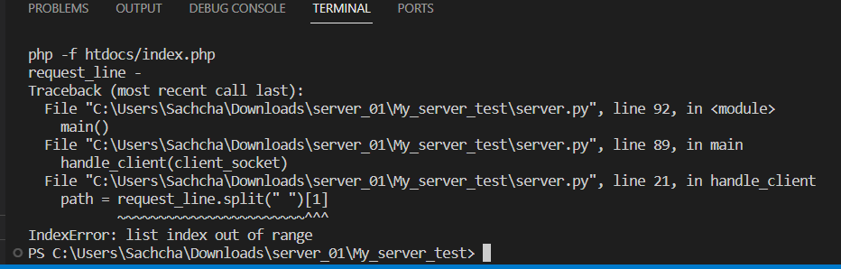

sources I have used
welcome - 21002029 - W.A.N.Umasha
- Link
: how to pass parameters to php file via command line
- 
: This error might occur sometimes resulting 'This site cant be reached
localhost refused to connect..' error. it's because
the server can have up to 10 pending connections waiting to be accepted.
If a new connection request comes in and the queue is already full (contains 10 pending connections),
the server may refuse the new connection request.
http://localhost:2728/
This is the default welcome page served by the web server.
to add two numbers type url - http://localhost:2728/add_numbers_form.html in the browser.